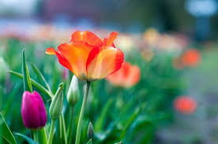

Nature
Natural gardens are designed to emulate and celebrate the beauty of untouched landscapes, emphasizing harmony with local ecosystems. They often feature native plants that require minimal maintenance and are well-suited to the local climate,

Plants
plants that require minimal maintenance and are well-suited to the local climate, promoting biodiversity and attracting beneficial wildlife like bees, butterflies, and birds. By incorporating elements such as native grasses, wildflowers,

Biodiversity
these gardens create a serene, low-impact environment that supports ecological balance. But also fosters a deeper connection between people and the natural world. Natural gardens serve as a living testament to sustainable practices, demonstrating how thoughtful design can enhance both aesthetic appeal and environmental health.
